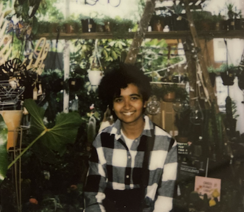

____ ___ ___ ____ ___ ____ / __ \/ _ \/ _ \/ __ `__ \ /_ / / / / / __/ __/ / / / / / / /_ /_/ /_/\___/\___/_/ /_/ /_/ /___/ v1.0.0
Type 'help' for list of supported commands.
about

Hi! I'm Neem and I'm a Fullstack Software Engineer. I will be graduating from the University at Buffalo with a BS in Computer Science in May 2025. I enjoy tinkering with systems to figure out how they work, and I love building things (software, wood, 3D printing, fabric, anything really...)
I also deeply enjoy helping people learn things! I've helped students design, build, and test everything from mini wind turbines to their own social media sites. I have worked as a Student Leader for the First Year Engineering Seminar sequence (EAS 199/202), a Tutor at UB's Tutoring and Academic Support Services, as well as an Undergraduate TA for CSE 370: Human Computer Interaction.
LINKS:
- LinkedIn: linkedin.com/in/neem-zaman
- Email: neemzam2[at]gmail.com
- GitHub: github.com/Neemz16
Enable JavaScript to see more :)